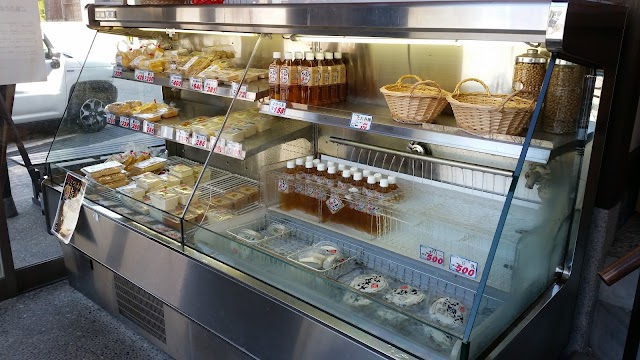
| 営業時間 | 月・火・水・木・土・日 10:00〜18:00 |
|---|---|
| 定休日 | 金曜 |
| 住所 | 石川県白山市白峰チ−６２−６ |
| 予約 | 要確認 — ☎ 076-259-2024 ／ 公式サイト |
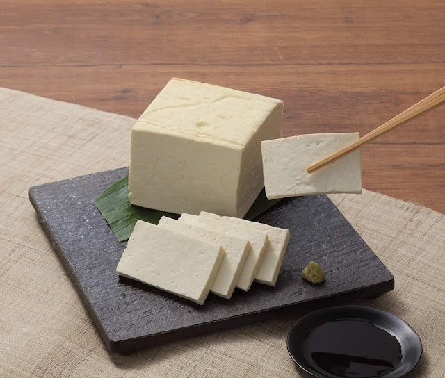
| 営業時間 | 月・火・水・木・金・土・日 7:00〜18:30 |
|---|---|
| 定休日 | なし(要最終確認) |
| 住所 | 石川県白山市桑島４−９６−２９ |
| 予約 | 要確認 — ☎ 076-259-2707 ／ 公式サイト |
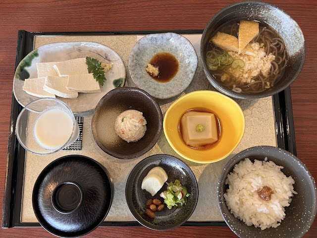
| 営業時間 | 食事 11:00～15:00（売切次第終了）／豆腐販売 9:00～17:00（夏季は18:00まで） |
|---|---|
| 定休日 | 毎週木曜・第1第3水曜、年末年始（臨時休業あり） |
| 住所 | 石川県白山市瀬戸寅１３８−３ |
| 予約 | 要確認 — ☎ 076-256-7325 ／ 公式サイト |
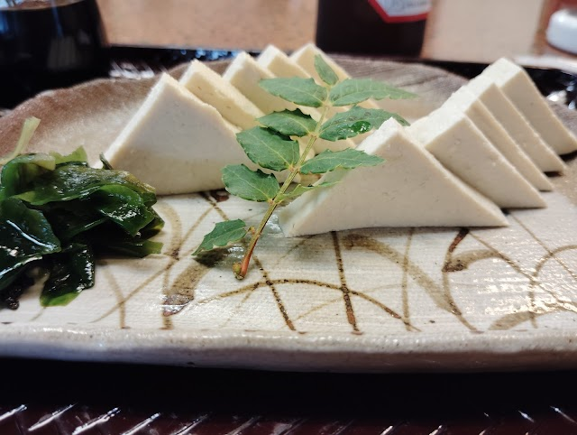
| 営業時間 | 月・木・土・日 11:00〜16:00 ／ 水 11:00〜21:00 |
|---|---|
| 定休日 | 火・金曜 |
| 住所 | 石川県白山市白峰ロ−６４−３ |
| 予約 | 要確認 — ☎ 076-259-2588 ／ 公式サイト |
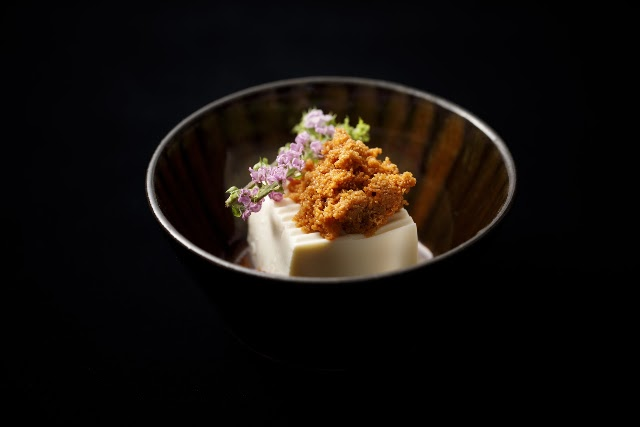
| 営業時間 | 月・火・木・金・土 9:00〜18:00 ／ 日 10:00〜18:00 |
|---|---|
| 定休日 | 水曜 |
| 住所 | 石川県白山市美川北町ル−６１ |
| 予約 | 可 — ☎ 076-278-3370 ／ 公式サイト |
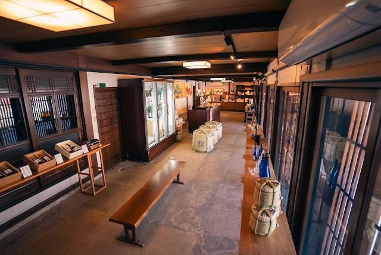
| 営業時間 | 月・金・土 10:00〜16:00 |
|---|---|
| 定休日 | 火・水・木・日曜 |
| 住所 | 石川県白山市鶴来本町１丁目ワ−４７ |
| 予約 | 要確認 — ☎ 076-273-1180 ／ 公式サイト |
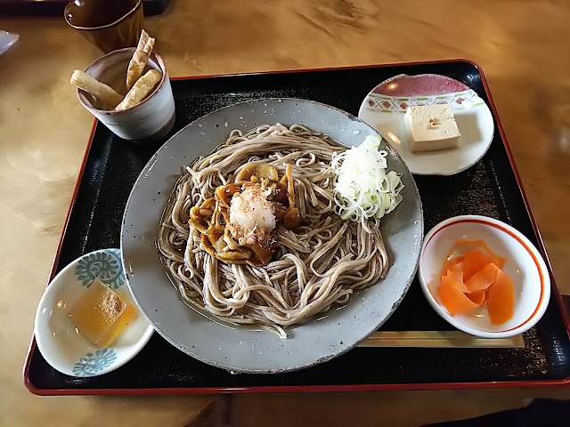
| 営業時間 | 月・木・金・土・日 11:30〜16:00 |
|---|---|
| 定休日 | 火・水曜 |
| 住所 | 石川県白山市相滝町ハ−32 |
| 予約 | 可 — ☎ 076-254-2737 ／ 公式サイト |
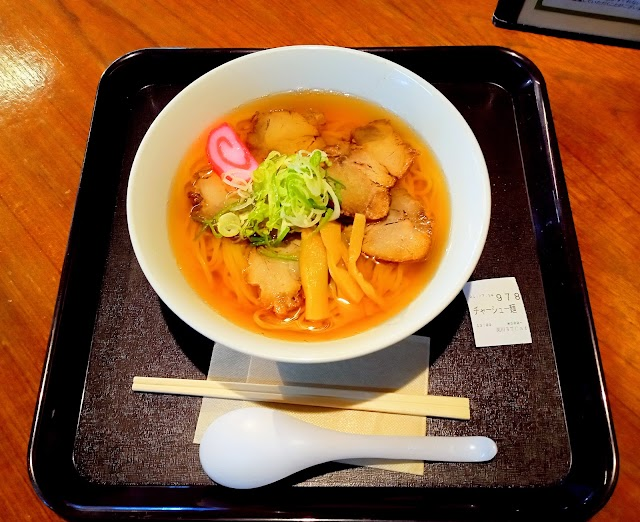
| 営業時間 | 月・火・水・木・金・土・日 7:00〜20:00 |
|---|---|
| 定休日 | なし(要最終確認) |
| 住所 | 石川県白山市美川中町ロ−２２１−１ |
| 予約 | 可 — ☎ 076-278-7788 ／ 公式サイト |
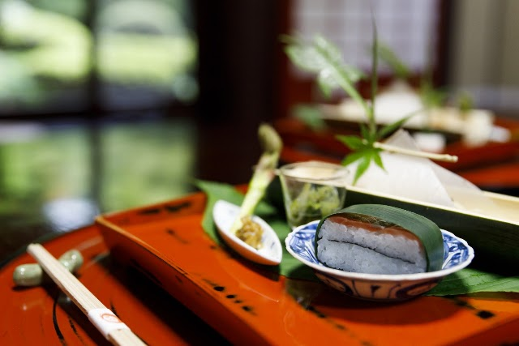
| 営業時間 | 昼 12:30～14:30／夜 17:30～21:00（要予約） |
|---|---|
| 定休日 | 火曜 |
| 住所 | 石川県白山市三宮町イ−５５−２ |
| 予約 | 要確認 — ☎ 076-272-0570 ／ 公式サイト |
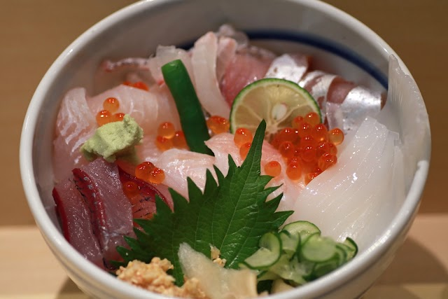
| 営業時間 | 月・火・木・金・土・日 11:00〜14:00, 17:00〜22:00 |
|---|---|
| 定休日 | 水曜 |
| 住所 | 石川県白山市美川永代町甲１−４６ |
| 予約 | 可 — ☎ 076-259-5566 ／ 公式サイト |
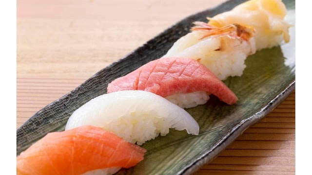
| 営業時間 | 火・水・木・金・土 17:30〜22:00 |
|---|---|
| 定休日 | 月・日曜 |
| 住所 | 石川県白山市長屋町イ−２４−１ |
| 予約 | 可 — ☎ 076-278-5989 ／ 公式サイト |
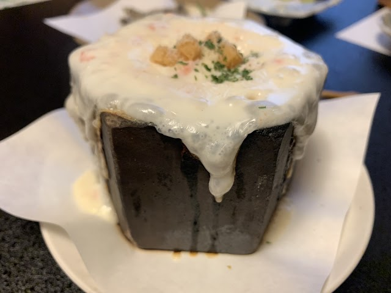
| 営業時間 | 月・火・木・金・土・日 11:30〜14:00, 17:00〜22:00 |
|---|---|
| 定休日 | 水曜 |
| 住所 | 石川県白山市美川浜町ソ−４２６ |
| 予約 | 可 — ☎ 076-278-5335 ／ 公式サイト |
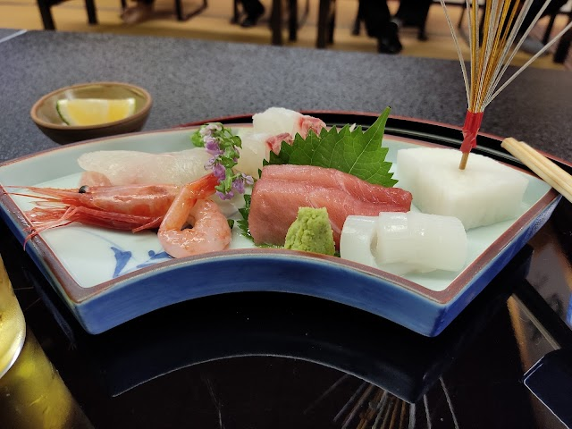
| 営業時間 | 月 11:30〜13:30, 17:00〜22:00 ／ 火・水・木・金・土・日 11:30〜14:00, 17:00〜22:00 |
|---|---|
| 定休日 | なし(要最終確認) |
| 住所 | 石川県白山市美川南町ソ−１３−１ |
| 予約 | 可 — ☎ 076-278-2026 |
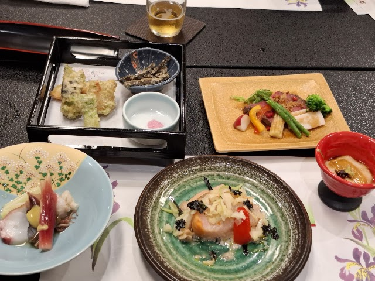
| 営業時間 | 月・火・水・木・金・土・日 11:30〜21:30 |
|---|---|
| 定休日 | なし(要最終確認) |
| 住所 | 石川県白山市相木町１５１−１ |
| 予約 | 可 — ☎ 076-275-1871 ／ 公式サイト |
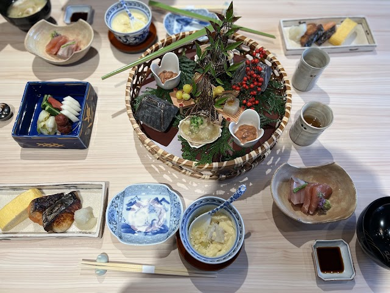
| 営業時間 | 月・火・水・木・金・土・日 12:00〜22:00 |
|---|---|
| 定休日 | なし(要最終確認) |
| 住所 | 石川県白山市八幡町リ−１４５ |
| 予約 | 可 — ☎ 076-287-5677 ／ 公式サイト |
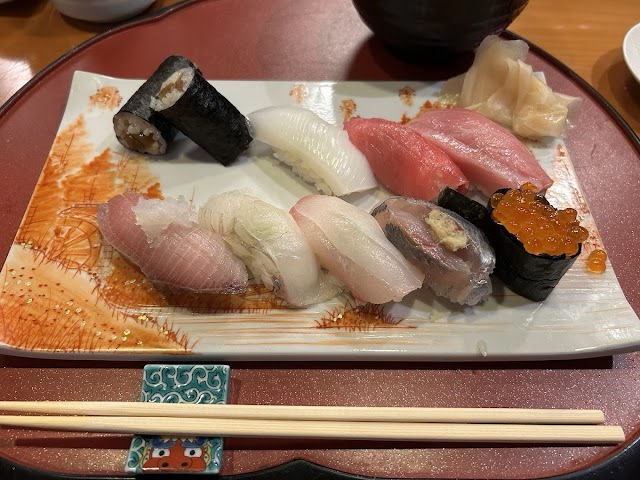
| 営業時間 | 火・水・木・金・土 11:30〜13:30, 17:00〜21:00 |
|---|---|
| 定休日 | 月・日曜 |
| 住所 | 石川県白山市宮永市町４７１−１ |
| 予約 | 可 — ☎ 076-276-4085 ／ 公式サイト |
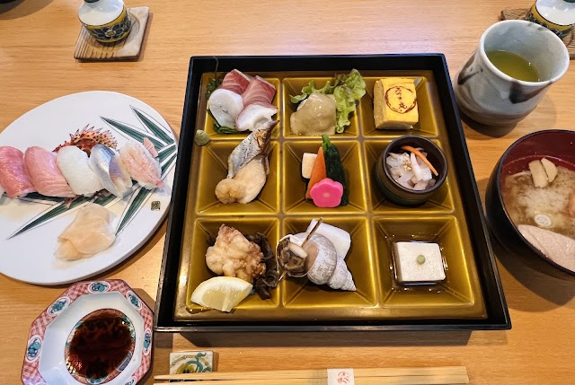
| 営業時間 | 月・火・水・木・金・土 11:30〜14:00, 17:00〜22:00 |
|---|---|
| 定休日 | 日曜 |
| 住所 | 石川県白山市中町１８−１ |
| 予約 | 可 — ☎ 076-274-0102 |
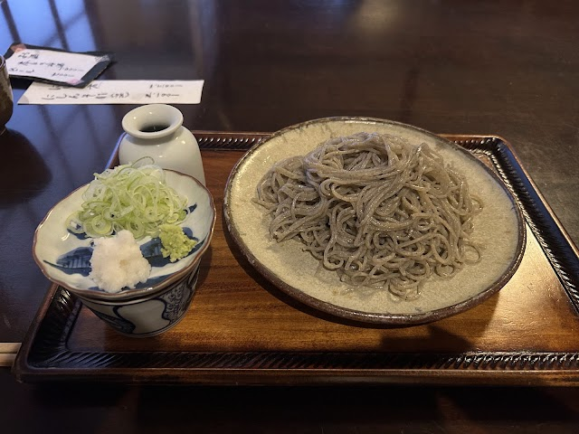
| 営業時間 | 月・火・水・金 11:30〜14:30 ／ 土・日 11:00〜14:30 |
|---|---|
| 定休日 | 木曜 |
| 住所 | 石川県白山市鶴来日吉町ロ−３２ |
| 予約 | 要確認 — ☎ 076-273-1090 |
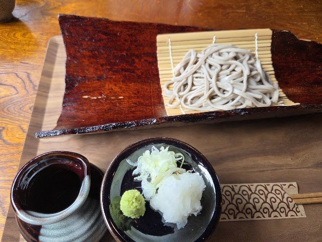
| 営業時間 | 水・木・金・土・日 11:00〜15:00 |
|---|---|
| 定休日 | 月・火曜 |
| 住所 | 石川県白山市河原山町ハ−６０ |
| 予約 | 可 — 公式サイト |
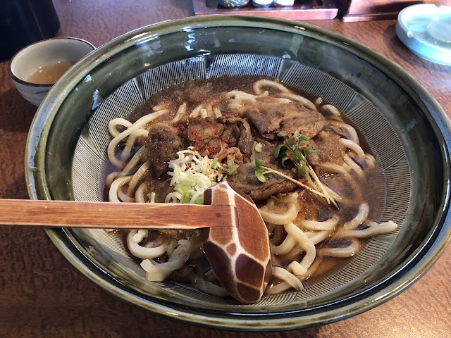
| 営業時間 | 月・水・木・金・土・日 11:00〜15:00, 17:00〜19:00 |
|---|---|
| 定休日 | 火曜 |
| 住所 | 石川県白山市蓮池町ア−９−４ |
| 予約 | 要確認 — ☎ 076-278-5919 ／ 公式サイト |
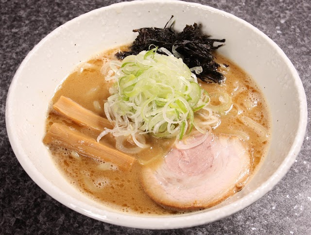
| 営業時間 | 月・火・木・金・土・日 11:00〜15:00, 17:30〜20:30 |
|---|---|
| 定休日 | 水曜 |
| 住所 | 石川県白山市乾町４１−３ |
| 予約 | 要確認 — ☎ 076-214-6800 ／ 公式サイト |
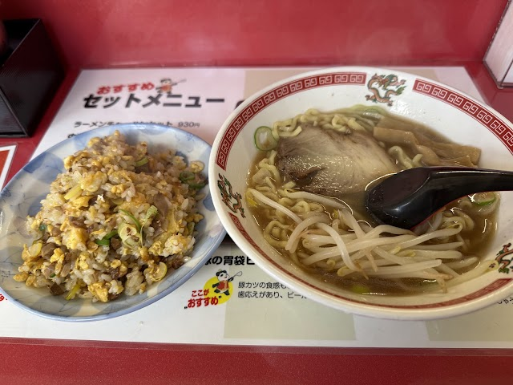
| 営業時間 | 月・水・木・金・土 11:00〜22:00 ／ 日 11:00〜19:30 |
|---|---|
| 定休日 | 火曜 |
| 住所 | 石川県白山市末広１丁目９７ |
| 予約 | 可 — ☎ 090-9766-5268 ／ 公式サイト |
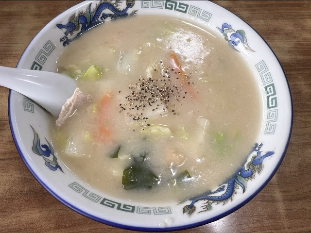
| 営業時間 | 月・火・水・木・金・土・日 10:30〜16:00 |
|---|---|
| 定休日 | なし(要最終確認) |
| 住所 | 石川県白山市瀬戸申１２ |
| 予約 | 要確認 — ☎ 076-256-7923 |
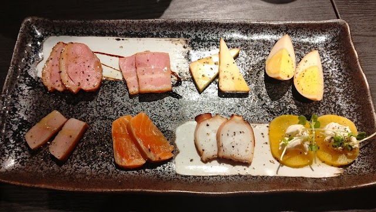
| 営業時間 | 月・水・木・金・土・日 18:00〜23:00 |
|---|---|
| 定休日 | 火曜 |
| 住所 | 石川県白山市鶴来本町２丁目ワ１２０ |
| 予約 | 可 — ☎ 076-218-9494 ／ 公式サイト |
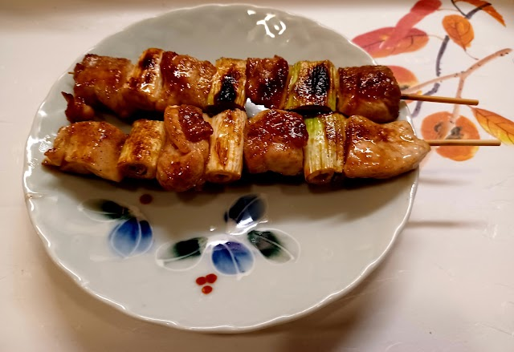
| 営業時間 | 月・火・木・金・土 17:00〜23:00 ／ 日 14:00〜21:00 |
|---|---|
| 定休日 | 水曜 |
| 住所 | 石川県白山市東新町５９ |
| 予約 | 可 — ☎ 076-200-8839 ／ 公式サイト |
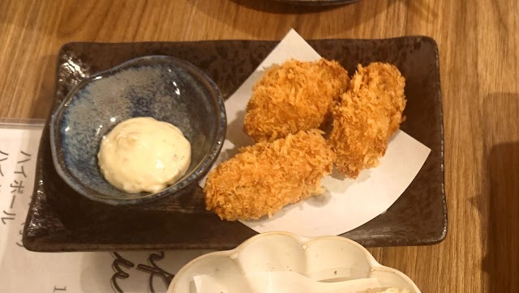
| 営業時間 | 月 18:00〜23:00 ／ 火・水・木・金・土・日 18:00〜22:30 |
|---|---|
| 定休日 | なし(要最終確認) |
| 住所 | 石川県白山市辰巳町６０−２ |
| 予約 | 可 — ☎ 076-205-2210 ／ 公式サイト |
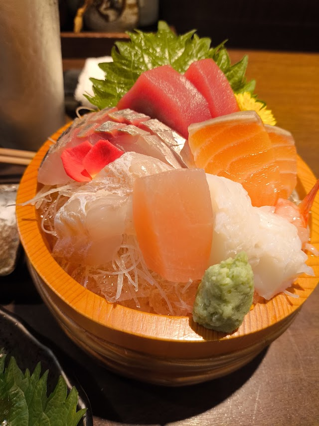
| 営業時間 | 月・火・木・金・土・日 18:00〜23:00 |
|---|---|
| 定休日 | 水曜 |
| 住所 | 石川県白山市徳丸町１６８−１ |
| 予約 | 可 — ☎ 076-277-4480 ／ 公式サイト |
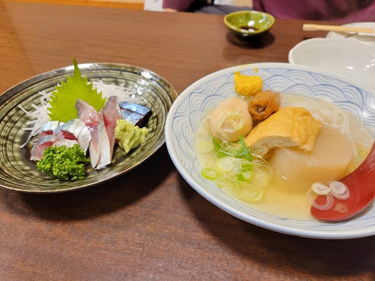
| 営業時間 | 月・火・水・木・金・土 17:00〜22:30 |
|---|---|
| 定休日 | 日曜 |
| 住所 | 石川県白山市西新町２０９−１ PoPoL MATT 1F |
| 予約 | 可 — ☎ 076-274-4668 |
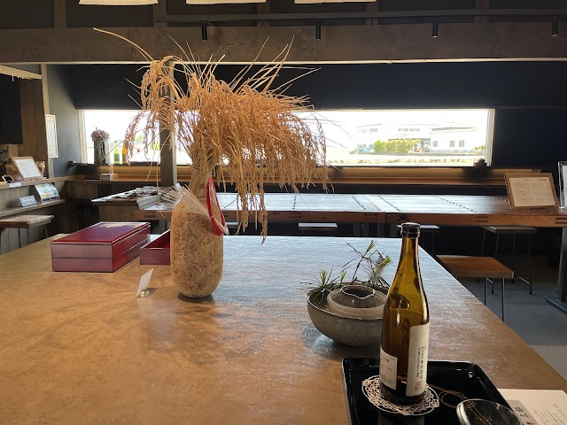
| 営業時間 | 月・火・水・木・金・土 10:00〜16:00 |
|---|---|
| 定休日 | 日曜 |
| 住所 | 石川県白山市坊丸町６０−１ |
| 予約 | 要確認 — ☎ 080-1951-5473 ／ 公式サイト |
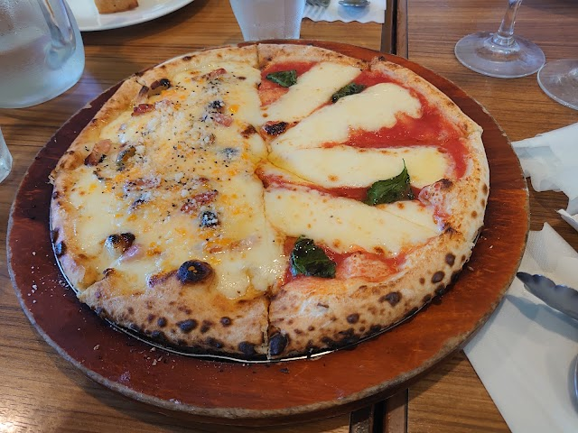
| 営業時間 | 月・火・木・金・土・日 11:30〜13:30, 17:30〜21:30 |
|---|---|
| 定休日 | 水曜 |
| 住所 | 石川県白山市博労３丁目２９−１ |
| 予約 | 可 — ☎ 076-274-0080 ／ 公式サイト |
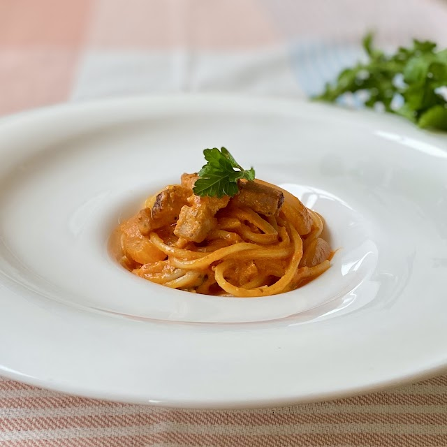
| 営業時間 | 月・水・木・金・土・日 11:30〜14:30, 18:00〜22:00 |
|---|---|
| 定休日 | 火曜 |
| 住所 | 石川県白山市平松町８９−１３ |
| 予約 | 可 — ☎ 076-259-1282 ／ 公式サイト |
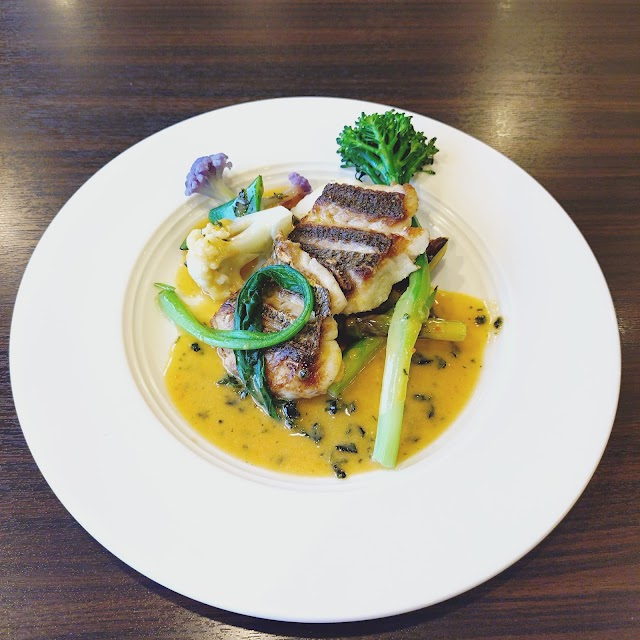
| 営業時間 | 月・木・金・土・日 11:00〜14:00, 18:00〜21:00 |
|---|---|
| 定休日 | 火・水曜 |
| 住所 | 石川県白山市倉光６丁目４６−１ |
| 予約 | 可 — ☎ 076-227-8720 ／ 公式サイト |
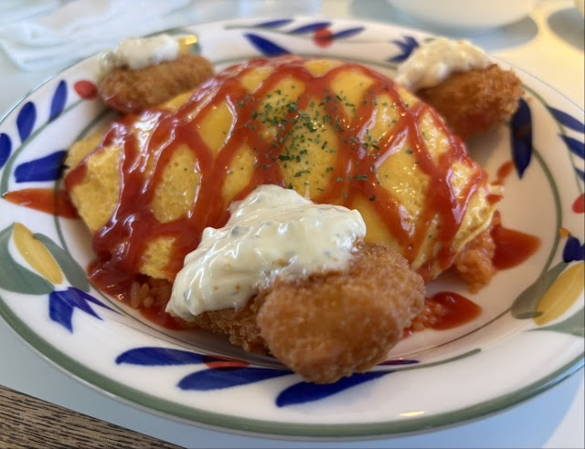
| 営業時間 | 月・火・水・金・土・日 11:00〜14:50, 17:00〜21:30 |
|---|---|
| 定休日 | 木曜 |
| 住所 | 石川県白山市幸明町３３１−１ |
| 予約 | 可 — ☎ 076-275-5946 ／ 公式サイト |
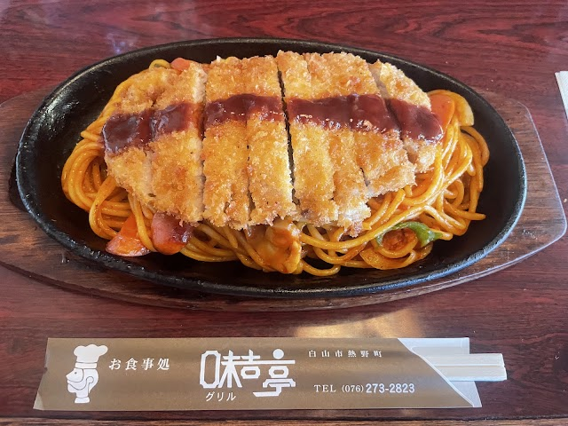
| 営業時間 | 月・火・水・金・土・日 11:00〜14:00 |
|---|---|
| 定休日 | 木曜 |
| 住所 | 石川県白山市熱野町イ−５２−８ |
| 予約 | 要確認 — ☎ 076-273-2823 |
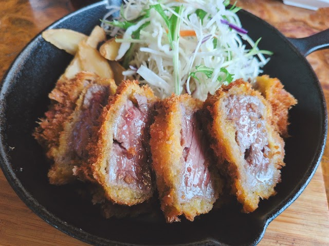
| 営業時間 | 月・日 11:00〜14:30 ／ 水・木・土 11:00〜14:30, 18:00〜20:30 |
|---|---|
| 定休日 | 火・金曜 |
| 住所 | 石川県白山市鹿島町い−１７−１ |
| 予約 | 可 — ☎ 076-209-2108 ／ 公式サイト |
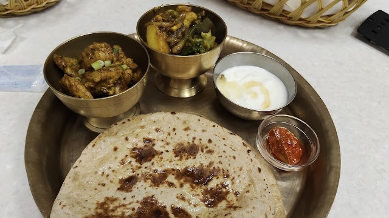
| 営業時間 | 月・火・水・木・金・土・日 11:00〜21:00 |
|---|---|
| 定休日 | なし(要最終確認) |
| 住所 | Swagat, カ 鶴来上東町 白山市 石川県 9250000 日本 |
| 予約 | 可 — ☎ 076-272-4855 ／ 公式サイト |
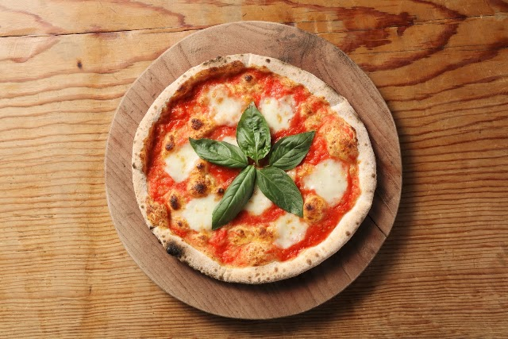
| 営業時間 | 月・水・木 11:00〜14:30, 17:00〜20:00 ／ 金 11:00〜14:30 ／ 土・日 11:00〜15:00, 17:00〜20:00 |
|---|---|
| 定休日 | 火曜 |
| 住所 | 石川県白山市八幡町リ−１−６ |
| 予約 | 可 — ☎ 076-273-9501 ／ 公式サイト |
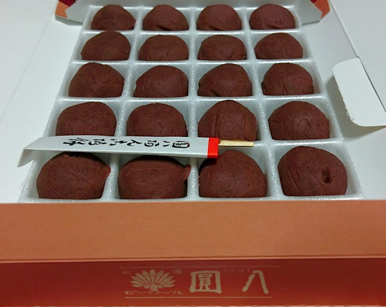
| 営業時間 | 月・火・水・木・金・土・日 8:00〜17:30 |
|---|---|
| 定休日 | なし(要最終確認) |
| 住所 | 石川県白山市成町１０７ |
| 予約 | 要確認 — ☎ 076-275-0018 ／ 公式サイト |
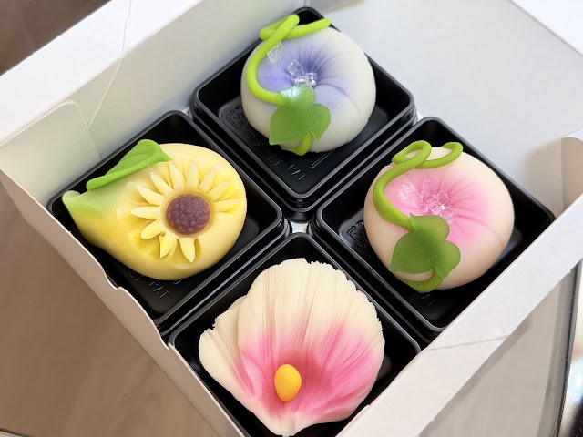
| 営業時間 | 月・火・水・木・金・土 8:00〜18:30 ／ 日 8:00〜18:00 |
|---|---|
| 定休日 | なし(要最終確認) |
| 住所 | 石川県白山市東新町１００ |
| 予約 | 可 — ☎ 076-276-1127 ／ 公式サイト |
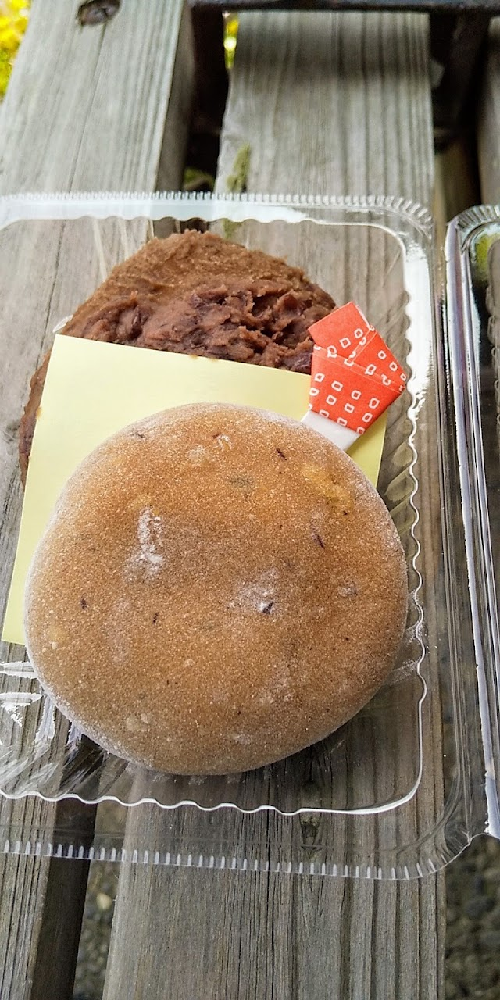
| 営業時間 | 月・水・木・金・土・日 8:00〜19:30 |
|---|---|
| 定休日 | 火曜 |
| 住所 | 石川県白山市白峰ロ−１６６−３ |
| 予約 | 要確認 — ☎ 076-259-2030 ／ 公式サイト |
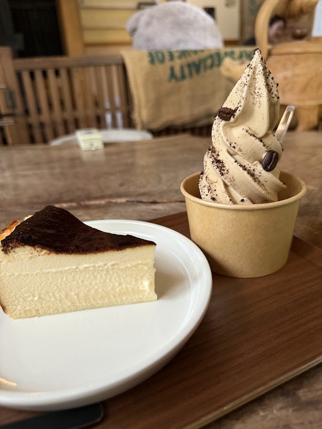
| 営業時間 | 月・木・金 8:00〜17:00 ／ 火 13:00〜17:00 ／ 土・日 6:00〜18:00 |
|---|---|
| 定休日 | 水曜 |
| 住所 | 石川県白山市瀬戸寅１３２−４ |
| 予約 | 可 — ☎ 076-256-7830 ／ 公式サイト |
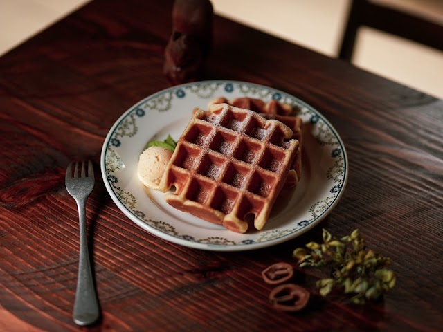
| 営業時間 | 火・水・木・金・土 11:00〜16:30 |
|---|---|
| 定休日 | 月・日曜 |
| 住所 | 石川県白山市瀬波子51−３ |
| 予約 | 可 — 公式サイト |
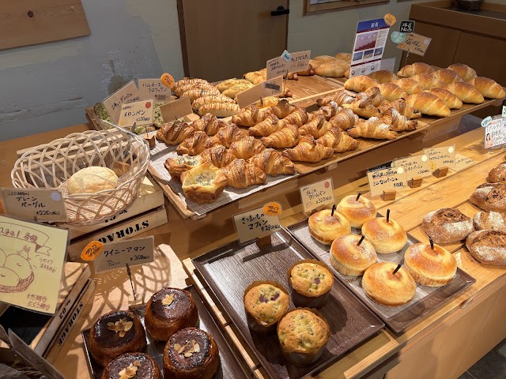
| 営業時間 | 月・木・金・土・日 9:00〜18:00 |
|---|---|
| 定休日 | 火・水曜 |
| 住所 | 石川県白山市鶴来本町１丁目ワ−101番地ー1 |
| 予約 | 要確認 — ☎ 076-255-7564 ／ 公式サイト |
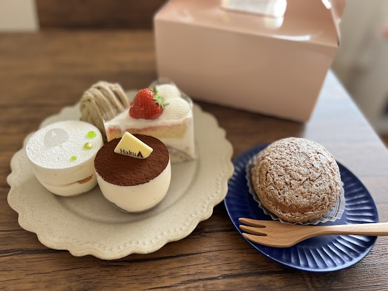
| 営業時間 | 火・水・木・金・土・日 10:30〜17:30 |
|---|---|
| 定休日 | 月曜 |
| 住所 | 石川県白山市鶴来本町２丁目ワ−３７ |
| 予約 | 要確認 — ☎ 076-259-5585 ／ 公式サイト |
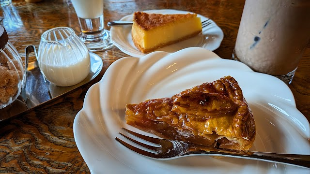
| 営業時間 | 月・火・水・金・土・日 10:00〜17:00 |
|---|---|
| 定休日 | 木曜 |
| 住所 | 石川県白山市吉野北２４ |
| 予約 | 要確認 — ☎ 076-255-5878 ／ 公式サイト |
本ガイドは個人利用目的で作成。掲載情報は2026年8月時点の調査に基づく。写真出典: Google Maps投稿写真(©各投稿者/Google)。